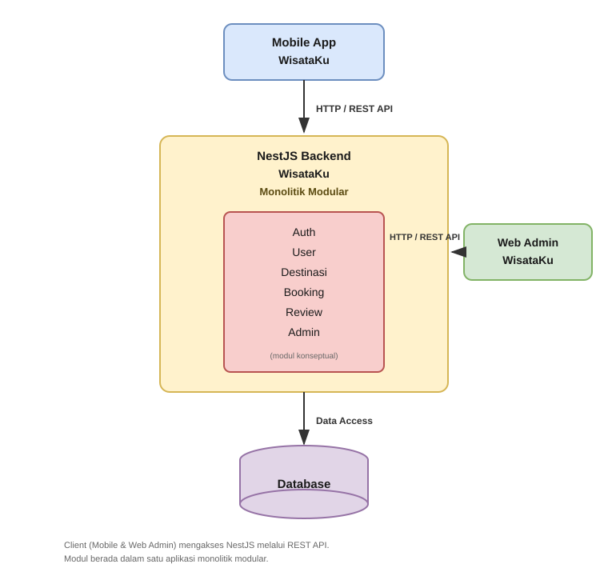
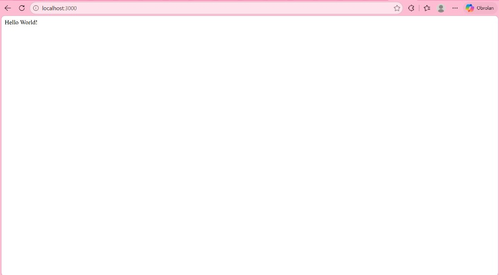
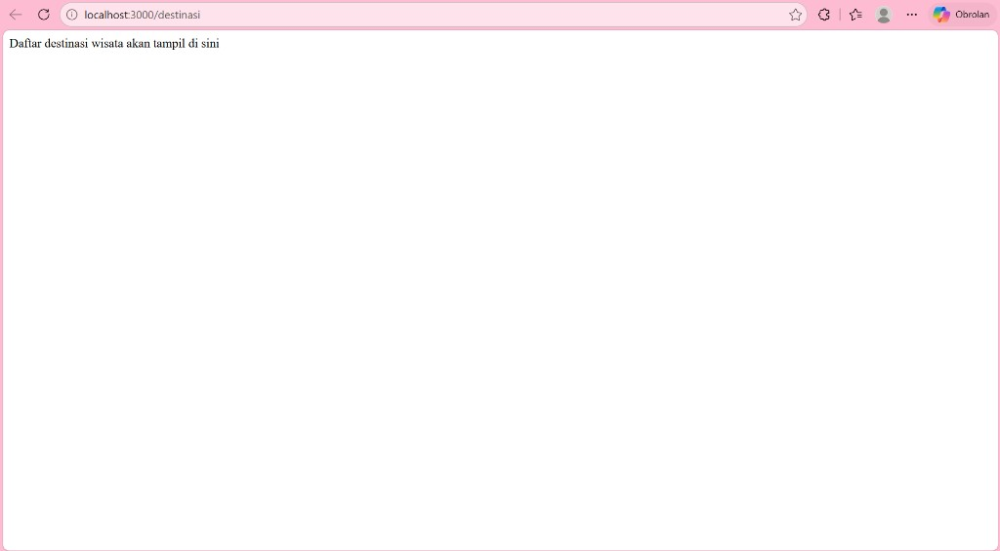

Studi Kasus Aplikasi WisataKu
| Nama | Firman Maulana |
|---|---|
| NIM | ____________________ |
| Program Studi | ____________________ |
| Mata Kuliah | ____________________ |
| Dosen Pengampu | ____________________ |
| Institusi | ____________________ |
| Semester | ____________________ |
Kolom yang belum diisi sengaja dikosongkan karena data belum tersedia. Tidak diisi dengan data fiktif.
WisataKu merupakan aplikasi layanan informasi dan pengelolaan destinasi wisata. Agar dapat digunakan oleh berbagai jenis client, aplikasi ini membutuhkan backend berupa web service yang menyediakan data dan fungsionalitas bisnis secara terpusat.
Backend NestJS berperan sebagai penghubung antara client dan data/aplikasi. Dua client utama yang dirancang mengakses backend adalah:
Komunikasi dilakukan melalui protokol HTTP/REST API, sehingga client tidak bergantung pada implementasi internal backend, melainkan hanya pada kontrak antarmuka layanan.
Tugas ini bertujuan untuk:
Pada praktikum ini telah dibuat project backend bernama wisataku-api. Project menggunakan framework NestJS dengan pendekatan modular. Server development dijalankan menggunakan perintah:
npm run start:dev
Aplikasi berjalan sebagai monolit NestJS sederhana (bukan microservices).
Endpoint bawaan NestJS telah diverifikasi sebagai berikut:
| Aspek | Keterangan |
|---|---|
| Endpoint | / |
| Method | GET |
| Response | Hello World! |
Endpoint ini menandakan aplikasi NestJS dapat dijalankan dan merespons permintaan HTTP dengan benar.
Sesuai materi praktikum, telah dibuat:
DestinasiModuleDestinasiController| Aspek | Keterangan |
|---|---|
| Endpoint | /destinasi |
| Method | GET |
| Response | Daftar destinasi wisata akan tampil di sini |
DestinasiModule telah didaftarkan pada AppModule sehingga endpoint dapat diakses.
Pada tahap ini belum terdapat database, business logic kompleks, autentikasi,
maupun fitur booking/review.
Monolitik modular berarti seluruh backend masih berada dalam satu aplikasi (satu proses dan satu unit deployment), tetapi diorganisasi menjadi modul-modul yang terpisah secara logis.
Pada NestJS, pendekatan ini sesuai karena framework mendukung struktur modular secara bawaan. Setiap domain dapat memiliki module, controller, dan service sendiri, namun tetap berjalan dalam satu aplikasi NestJS.
Pada WisataKu, konsep tersebut diterapkan melalui:
wisataku-api);main.ts);DestinasiModule);Pertanyaan tugas:
Mengapa arsitektur monolitik modular dipilih sebagai tahap awal pengembangan WisataKu, bukan langsung microservices?
Arsitektur monolitik modular dipilih karena WisataKu masih berada pada tahap awal pengembangan. Prioritas utama adalah membangun fondasi backend yang jelas, mudah dipahami, dan cepat diuji.
Kesederhanaan pengembangan. Pengembang cukup fokus pada satu aplikasi NestJS, satu alur request–response, dan satu struktur modul. Hal ini mempercepat pembelajaran dan implementasi fitur dasar.
Kemudahan deployment. Aplikasi cukup dijalankan sebagai satu service, misalnya melalui
npm run start:dev. Tidak perlu mengatur banyak service, service discovery, atau orkestrasi container sejak awal.
Kemudahan debugging. Error, log, dan alur pemanggilan fungsi berada dalam satu proses. Masalah lebih mudah dilacak dibanding sistem terdistribusi.
Komunikasi antar modul. Modul saling berkomunikasi secara lokal melalui import dan dependency injection. Belum diperlukan protokol jaringan antar service (HTTP internal, message queue, gRPC, dan sejenisnya).
Biaya dan kompleksitas operasional. Microservices dapat memberikan manfaat seperti skalabilitas independen dan isolasi kegagalan. Namun, pendekatan tersebut juga memperkenalkan kompleksitas infrastruktur, monitoring terdistribusi, serta pengelolaan jaringan. Biaya tersebut belum sebanding dengan kebutuhan WisataKu pada tahap praktikum awal.
Kesesuaian dengan tahap awal project. Fitur yang ada masih sederhana
(GET / dan GET /destinasi). Belum ada beban trafik tinggi, tim besar,
atau kebutuhan skalabilitas per-domain yang memaksa pemisahan service.
Peluang evolusi ke microservices. Dengan struktur modular yang baik, modul yang sudah terpisah secara logis dapat diekstraksi menjadi service mandiri di kemudian hari apabila kebutuhan bisnis dan skala sudah menuntutnya. Dengan demikian, monolitik modular bukan penolakan terhadap microservices, melainkan tahap fondasi sebelum kompleksitas tambahan itu dibenarkan.
| Aspek | Monolitik Modular | Microservices |
|---|---|---|
| Struktur aplikasi | Satu aplikasi dengan banyak module | Banyak service mandiri |
| Deployment | Satu unit deploy | Banyak unit deploy |
| Komunikasi | Lokal (import / DI) | Jaringan (API / message broker) |
| Debugging | Relatif lebih sederhana | Lebih kompleks (terdistribusi) |
| Kompleksitas operasional | Lebih rendah di awal | Lebih tinggi sejak awal |
| Skalabilitas | Skala per aplikasi secara keseluruhan | Skala per service |
| Pengelolaan infrastruktur | Lebih ringan | Lebih besar |
Kedua pendekatan valid. Pilihan ditentukan oleh tahap project, skala tim, kebutuhan skalabilitas, dan kesiapan operasional.
Terdapat dua client utama:
Keduanya mengakses backend melalui HTTP/REST API.
Mobile App WisataKu ──HTTP/REST API──► NestJS Backend WisataKu Web Admin WisataKu ──HTTP/REST API──► NestJS Backend WisataKu NestJS Backend WisataKu ──Data Access──► Database
Backend NestJS merupakan pusat layanan aplikasi WisataKu. Backend memproses request dari client, menerapkan logika aplikasi, dan secara arsitektural akan mengakses database pada tahap pengembangan berikutnya. Pola arsitektur yang digunakan: Monolitik Modular.
| Modul | Peran konseptual |
|---|---|
| Auth | Autentikasi dan otorisasi akses |
| User | Pengelolaan data pengguna |
| Destinasi | Pengelolaan dan penyajian destinasi wisata |
| Booking | Pemesanan / reservasi destinasi |
| Review | Ulasan pengguna terhadap destinasi |
| Admin | Fungsi pengelolaan khusus panel admin |
Daftar modul tersebut merupakan rancangan konseptual/future structure. Pada implementasi praktikum saat ini, modul yang telah dibuat adalah Destinasi beserta controller-nya.
Seluruh modul dirancang berada dalam satu aplikasi NestJS, bukan sebagai microservices terpisah.
Database digambarkan sebagai komponen penyimpanan data yang secara arsitektural akan diakses oleh backend melalui jalur data access. Pada praktikum saat ini, jenis database tertentu belum ditentukan dan belum diimplementasikan.
Diagram arsitektur berikut merepresentasikan file sumber
docs/wisataku-arsitektur.drawio.

Diagram menunjukkan:
Hasil pengujian endpoint yang telah diimplementasikan:
| Endpoint | Method | Hasil |
|---|---|---|
/ |
GET | Hello World! |
/destinasi |
GET | Daftar destinasi wisata akan tampil di sini |
Endpoint tersebut telah berhasil diuji saat aplikasi dijalankan dengan
npm run start:dev pada http://localhost:3000.
Berikut adalah bukti pengujian endpoint melalui browser pada
http://localhost:3000.


Berdasarkan analisis dan implementasi praktikum, dapat disimpulkan bahwa:
Sistem pada tahap ini masih merupakan fondasi praktikum dan belum diklaim sebagai sistem production-ready.